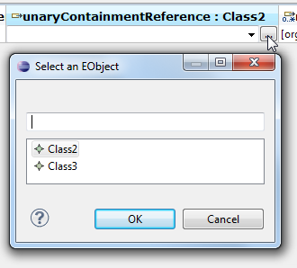

You can view model elements in a table by first selecting these model elements in any model editor or view (such as the MoDisco model browser or the sample reflective Ecore model editor). Then right-click and choose View in a Table :
You can drag elements from a model editor and drop them onto an open table to add them to this table. Note that the model editor and table must be opened on the same ResourceSet for this to work.
You can also drop a model element onto a reference to set a unary reference, or add the element to the list for a n-ary reference :
If the table was opened with a configuration that allows this (for example, you can create instances of Dependency in a "table of dependencies"), you can add a model element by clicking on the "plus" icon :
You can remove elements from a table by selecting these elements, right-clicking and choosing
Remove Lines.
This only removes the elements from the view, not the model.
You can delete elements from the model by selecting these elements, right-clicking and selecting Delete:
To edit an attribute or reference, double-click on its cell in the table, or select the cell and hit F2. The cell should then go into edit mode (if the value is editable):
To commit the value, hit Enter. To cancel the edit, hit Escape.
You can edit all the standard Ecore data types: EString, EChar, EFloat, EFloatObject, ECharacterObject, EBoolean, EBooleanObject, EDouble, EDoubleObject, EInt, EIntegerObject, ELong, ELongObject, EBigInteger, EBigDecimal, EByte, EByteObject, EShort, EShortObject.
If the value you entered is not valid for this type, the contents become highlighted in red, and you can't commit the value:
When you enter edit mode for a n-ary attribute (one which accepts a list of values instead of just a single value), a dialog opens to let you edit the values:
You can add, remove, and move elements in the list by using the buttons.
For unary references, you can select a value in several ways:

For composite references, you will be asked for confirmation because changing a composite reference means deleting the previous value (if any) from the model, and moving the new value from its previous parent.
When you edit a n-ary reference, this dialog opens:
You can undo/redo modifications done on the model by using the undo/redo actions in the editor in which the model is opened. That is: when you open a .table file, then you can undo/redo directly in the table editor; but if you open a table view from a model editor using the View in a Table action, then you must call the undo/redo actions on the editor from which the table view was opened.
Select cells and use the Copy action (either through the context menu or Edit > Copy in the main menu) to copy the contents of the selected cells as text to the clipboard. You can then paste the clipboard contents into any program, such as a text or spreadsheet editor.
There are 2 ways to sort columns :
You can load FacetSets in a table. These FacetSets will be used in the override resolution process for Facet elements, but will not automatically add columns for all the Facet elements defined in the loaded FacetSets. If you want to add columns, see Adding Columns.
To load FacetSets, click on the Load FacetSets action in the toolbar:
Then select the FacetSets you want to load in the dialog, and click OK:

If you unload FacetSets that contain attributes, references or operations that are currently displayed as columns in the table, then these columns will be deleted (a warning dialog will ask you if you want to proceed anyway).
You can load customizations in a table to customize the way the elements and table headers are displayed.
To load a customization, click on Load Customizations in the toolbar:

In the dialog that opens, move the customizations you want to load from the left pane to the right pane, and then click OK. You can use the filter text field to narrow down the list of available customizations. The customization in the right pane that appears grayed out is called the local customization. It represents customizations that you applied implicitly by for example hiding columns.
To add columns to the table, you can either click on Add Columns in the table editor's or view's toolbar:
Or right-click in a table and choose Add Columns from the contextual menu:
A dialog will open to let you choose an ETypedElement. The ETypedElement must be either:
You can use the text filter to narrow down the list, and choose an element from the right EClass or Facet:
A new column will be added to the table to display the value of this ETypedElement for each row. If the ETypedElement cannot be evaluated for any of the elements currently in the table, then the column won't appear.
This screenshot shows how hierarchical FacetSets are represented: the org.eclipse.emf.facet.efacet.examples.library.core.facet FacetSet contains two FacetSets: writer and book:
This screenshot shows how aggregates are represented in this dialog: the org.eclipse.emf.facet.efacet.examples.library.core.aggregate FacetSet is an Aggregate that aggregates org.eclipse.emf.facet.efacet.examples.library.core.facet and org.eclipse.emf.facet.efacet.examples.library.core.custom:

A .table file is a table model serialized as XMI, which contains:
To re-open a saved table, simply double-click on the .table file, or right-click and choose to open with the Model Table editor:
You can hide columns by clicking on Select Columns To Hide:
This will open a dialog in which you can check columns to show and uncheck columns to hide:
You can also sort the columns by name in alphabetical order by checking Sort Columns By Name.
Storage of the hidden columns is done using a local customization. We recommend to always keep the local customization at the top of the customization stack. The following dialog can appear if the local customization is not the first:
The action Select Columns To Show/Hide can display a warning message with a question. This dialog provides a checkbox to avoid further appearances of this dialog. The NatTable Editor preference page controls this preference:
You can choose an ETypedElement which determines which elements are allowed to be in the table. Any ETypedElement that is applicable on an EObject and returns a boolean is usable for this purpose.
To set this ETypedElement, click on "Change Allowed Contents" in the toolbar:
This opens a dialog from which you can select the ETypedElement :
If some of the elements that were already in the table before you changed the ETypedElement don't match the new ETypedElement, then you will be asked whether you want to remove these non-presentable elements:
Once the ETypedElement is changed, you won't be able to add elements that are not matched by this new ETypedElement.
Copyright © 2012 CEA LIST. All rights reserved. This program and the accompanying materials are made available under the terms of the Eclipse Public License v1.0 which accompanies this distribution, and is available at http://www.eclipse.org/legal/epl-v10.html. Contributors: Nicolas Bros (Mia-Software)